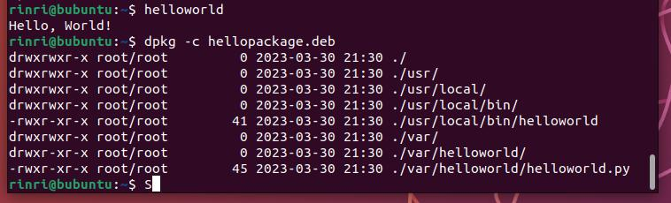

Lab9 Solution Amirlan Sharipov (BS21-CS-01)
Table of Contents
1. Question 1
One of the alternative is to use GPS-based ntp and sync time with the satellites.
2. Question 2
Use one server as an ntp client and another as an ntp server and sync them regularly using cron.
3. Question 3
apt is a new command-line interface aimer for interactive usage. apt is a high-level tool to interact with tools like apt-get and apt-cache.
4. Question 4
upgrade only upgrades the packages and never removes them, whereas full-upgrade may result in removal of some packages. This may cause problems for system administrators.
5. Question 5
The information is taken from https://linuxhint.com/install-atom-text-editor-ubuntu-22-04/ I am very skeptical about this method. Atom is deprecated. As well as apt-key. But it works
5.1. Add gpg atom’s gpg keys
wget -qO - https://packagecloud.io/AtomEditor/atom/gpgkey | sudo apt-key add -
5.2. Add atom’s repository to sources list
sudo sh -c ’echo “deb [arch=amd64] https://packagecloud.io/AtomEditor/atom/any/ any main” > /etc/apt/sources.list.d/atom.list’
5.3. Dowload packages information from all sources
sudo apt update
5.4. Search for atom
apt search atom There was a huge output with atom in it.
5.5. Finally install atom
sudo apt install atom
6. Question 6
cat control create-package.sh
Package: hellopackage
Version: 1.0
Architecture: all
Maintainer: RinRi
Depends: python3
Description: Hello world
#!/bin/bash
rm -rf hellopackage
mkdir -p hellopackage hellopackage/usr/local/bin hellopackage/var/helloworld
printf "%s" '#!/usr/bin/env python3\nprint("Hello, World!")' > hellopackage/var/helloworld/helloworld.py
printf "%s" '#!/bin/bash\n/var/helloworld/helloworld.py' > hellopackage/usr/local/bin/helloworld
chmod -R 0755 hellopackage/var/helloworld hellopackage/usr/local/bin/helloworld
mkdir -p hellopackage/DEBIAN
cp control hellopackage/DEBIAN/
dpkg-deb --build --root-owner-group hellopackage
After this just use sudo apt install ./hellopackage.deb and everything works.

The artifacts created by the package are the same as in the image but from the root directory.